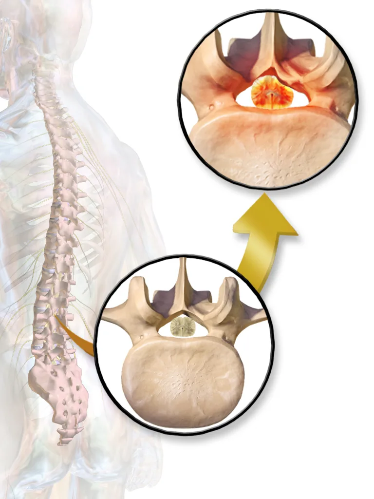
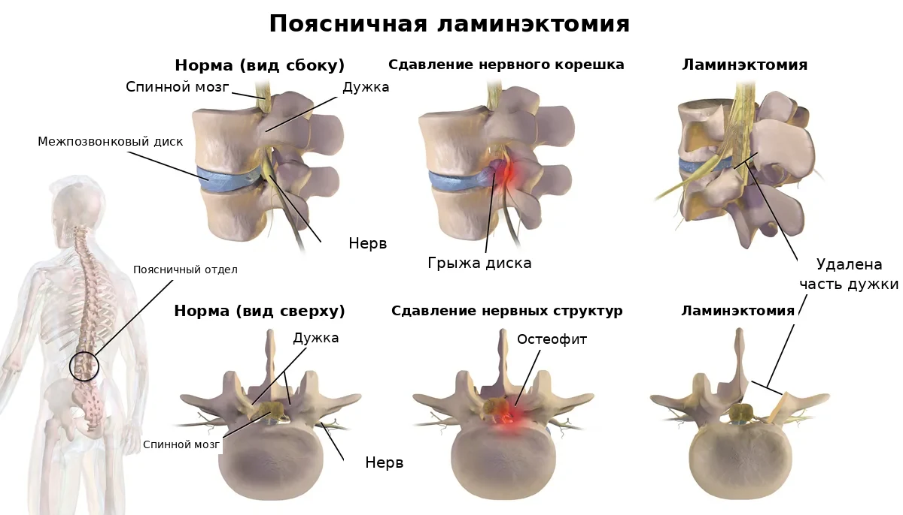
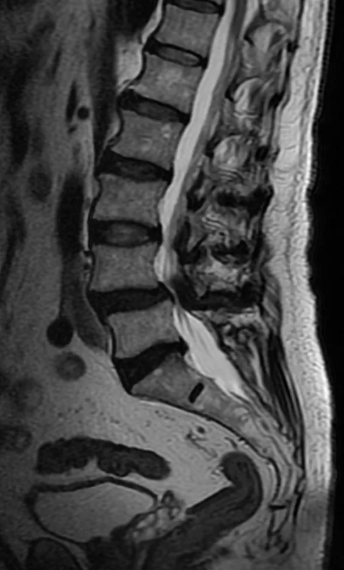
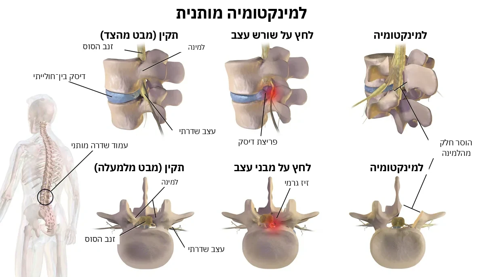
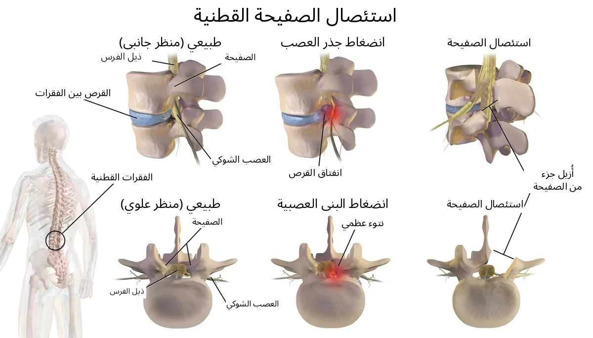

Главное за 30 секунд
- При ламинэктомии удаляют часть дужки позвонка, чтобы освободить сдавленные нервы.
- Вставать начинают рано, но только когда разрешит команда отделения.
- Слабость ног, онемение промежности или проблемы с мочеиспусканием: немедленно в приёмное отделение.
Видео: Ламинэктомия — что это и как подготовиться
Что это за операция
Ламинэктомия — операция на позвоночнике, при которой удаляют часть костной дуги позвонка (пластинку дуги, или ламину), а при необходимости также утолщённые связки и костные разрастания. Это создаёт больше места для сдавленных нервных структур. При поясничном стенозе освобождают преимущественно нервные корешки; в других отделах позвоночника декомпрессия может быть направлена на спинной мозг.
- Чаще всего её делают при стенозе (сужении) позвоночного канала в поясничном отделе, когда боль, онемение или слабость в ногах не проходят от лечения без операции (Covaro et al., 2016).
- Иногда одновременно с освобождением нервов требуется фиксация позвонков (спондилодез), например при нестабильности позвоночника. Нужна ли она именно вам, определяет спинальный хирург (ортопед или нейрохирург) после обследования.
- Вставать и ходить обычно начинают рано, под контролем команды отделения. Когда именно — решает команда.



Подготовка
- Душ: вечером накануне операции вымойте тело и волосы. Утром повторите душ, если это указано отделением. Используйте мыло или антисептическое средство согласно инструкции отделения. Если есть аллергия на мыло или антисептики — сообщите персоналу.
- Не брейте кожу на спине в области операции сами.
- Сообщите заранее, если есть рана, ссадина или воспаление кожи на спине, температура, кашель, жжение при мочеиспускании, проблема с зубами — любая инфекция до операции.
- Принесите список всех лекарств и последние снимки/исследования позвоночника, если они у вас есть.
Лекарства перед операцией
Это общие правила. Точные указания даст ваш врач — следуйте им.
- Принесите список всех лекарств, которые принимаете.
- Препараты, разжижающие кровь (антикоагулянты и антиагреганты): останавливать — только по указанию врача. Аспирин не отменяйте сами.
- Если вы принимаете ингибиторы SGLT2 (например, эмпаглифлозин, дапаглифлозин или эртуглифлозин), заранее сообщите врачу, даже если у вас нет диабета: некоторые из этих лекарств назначают также при сердечной недостаточности и болезни почек. Перед плановой операцией эмпаглифлозин и дапаглифлозин обычно прекращают не менее чем за 3 дня, эртуглифлозин — не менее чем за 4 дня. Это помогает снизить риск кетоацидоза, который может возникать без выраженного повышения сахара крови. Когда прекратить и возобновить лечение, определяет врач. Не меняйте лечение самостоятельно.
- Инсулин и другие препараты от диабета: врач даст вам индивидуальный план на день перед операцией и на день операции. При диабете первого типа организму необходим базальный инсулин. Его могут вводить инъекциями или непрерывно подавать с помощью инсулиновой помпы. Не прекращайте введение базального инсулина и не меняйте настройки помпы самостоятельно. Получите индивидуальные указания врача на период перед операцией и после неё.
- Голодание: обычно лёгкую еду необходимо закончить не менее чем за 6 часов до начала анестезии, жирную или тяжёлую — не менее чем за 8 часов. Прозрачные жидкости, например воду, обычно можно пить до 2 часов до анестезии. При некоторых заболеваниях, включая диабет и замедленное опорожнение желудка, правила могут отличаться. Следуйте точным указаниям отделения.
Дренаж после операции
Дренаж — тонкая трубка из раны, по которой кровь и жидкость оттекают в закрытый пакет или ёмкость.
- Дренаж ставят не всегда — решает хирург. В систематическом обзоре (Schnake et al., 2022) рутинный дренаж после плановых операций на грудном и поясничном отделах не показал доказанной пользы.
- Когда удалять — решает хирург. Удаляет медсестра или врач.
- Берегите трубку: не тяните, следите, чтобы она не перегибалась. Не вставляйте и не соединяйте трубку сами.
- Сразу сообщите медсестре, если трубка выпала или отсоединилась; ёмкость быстро наполняется ярко-красной кровью; ранее наблюдавшийся отток внезапно прекратился; жидкость подтекает вокруг трубки; в ёмкости или на повязке появилась прозрачная водянистая жидкость, особенно если одновременно возникла головная боль, усиливающаяся сидя или стоя; усилились боль или отёк, появились температура, головокружение, новая слабость или онемение в ногах. Прозрачное отделяемое не обязательно означает утечку спинномозговой жидкости, но его необходимо проверить. Не пытайтесь сами прочищать, промывать или соединять трубку.
Когда срочно обращаться за помощью
В больнице немедленно сообщите медсестре. После выписки немедленно обратитесь в приёмное отделение, если появилась новая или усиливающаяся слабость или онемение в ногах, онемение в области половых органов, между ног или вокруг заднего прохода (область «седла»), затруднение при начале мочеиспускания или при мочеиспускании, потеря обычного ощущения позыва к мочеиспусканию, невозможность помочиться либо новая потеря контроля над мочевым пузырём или кишечником. Не садитесь за руль сами. Если не можете безопасно добраться до приёмного отделения, вызывайте скорую помощь по номеру 101 («Маген Давид Адом»). Это могут быть признаки опасного сдавления нервов. Срочная медицинская оценка также нужна при прозрачных водянистых выделениях из раны или головной боли, которая выраженно усиливается сидя или стоя и уменьшается лёжа; это может быть связано с утечкой спинномозговой жидкости. Обратитесь за медицинской помощью без промедления при температуре, усиливающемся покраснении, отёке, гнойном отделяемом или расхождении раны, а также при боли, отёке, покраснении или необычном тепле одной голени. При внезапной одышке, боли в груди, кровохарканье или обмороке немедленно вызывайте скорую помощь по номеру 101 («Маген Давид Адом»).
Первые часы после операции: как помочь и не помешать
- Особое время. Первые часы и первые сутки после операции — время, когда за человеком наблюдают особенно внимательно. Чаще всего всё идёт спокойно, но иногда помощь нужна очень быстро. Поэтому проход к пациенту и медицинскому оборудованию всегда должен оставаться свободным.
- Медсестра проверяет. После возвращения в отделение медсестра регулярно проверяет давление, пульс, частоту дыхания, насыщение крови кислородом, температуру и уровень сознания, а также осматривает область операции. В нашем отделении обычно так: сразу при поступлении из операционной, затем через час, ещё через час, затем через два часа, а дальше каждые четыре часа в течение первых суток. При необходимости проверки делают чаще. Это плановое наблюдение и не обязательно означает, что что-то не так. Если назначен эноксапарин (Клексан), после некоторых ортопедических операций в нашем отделении первый послеоперационный укол обычно делают примерно через двенадцать часов. Время определяет врач с учётом остановки кровотечения, вида операции и спинальной или эпидуральной анестезии.
- Свободный проход. Пожалуйста, оставляйте свободный проход к кровати со всех сторон. Не ставьте стулья и сумки вплотную к кровати и в проходе. Медсестра и врач должны быстро подойти к пациенту, а тележка — подъехать с лекарствами и оборудованием.
- Меньше людей — лучше. Лучше, если одновременно рядом с пациентом будет не больше одного-двух близких, если это допускают правила отделения. Когда персонал подходит к пациенту, пожалуйста, освободите место. Если вас попросили выйти из палаты, выполните просьбу. Позже можно уточнить причину и задать вопросы.
- Только с разрешения. После наркоза бывают тошнота и рвота, а ослабленный человек может поперхнуться. После операции не давайте пациенту еду и питьё без разрешения медсестры. Когда пациент достаточно проснулся, может безопасно глотать и нет других ограничений, ему могут разрешить пить и есть. Иногда начинают с небольшого количества воды, затем переходят к еде. Когда и что можно, решает медицинская команда.
- Борта и кнопка. Борта кровати поднимают по решению персонала, с учётом состояния пациента. Они подходят не всем и не заменяют помощь при вставании. Не поднимайте и не опускайте борта самостоятельно. Кнопка вызова должна быть под рукой. Вставайте только с разрешения медицинской команды, первый раз — с помощью персонала.
- Если что-то не так. Если пациента тошнит, ему трудно дышать, он стал необычно сонливым, его трудно разбудить, появилась внезапная спутанность сознания или сильное беспокойство, боль резко усилилась либо повязка быстро пропитывается кровью — немедленно позовите медсестру. Нажмите кнопку вызова, а при тяжёлом состоянии громко зовите персонал. Не давайте самостоятельно еду, питьё или лекарства и не пытайтесь поднимать пациента.
Защита от инфекции в больнице: что могут сделать пациент и близкие
- Чистые руки. Обрабатывайте руки антисептиком или мойте с мылом при входе в палату и выходе из неё, до и после прикосновения к пациенту. После туалета, перед едой и при видимом загрязнении мойте руки водой с мылом. Антисептик обычно есть у входа в палату или у кровати. Можно вежливо попросить персонал обработать руки перед осмотром — это нормально.
- Рана и трубки. Не трогайте рану, повязку, дренаж, катетер и капельницу и не снимайте повязку сами. Если повязка намокла, загрязнилась или сползла, скажите медсестре.
- Чужое не трогать. Не садитесь на чужие кровати, не трогайте оборудование, раны и вещи других пациентов.
- Не заходите в чужие палаты. Без необходимости не ходите по другим палатам и отделениям больницы. Близким с температурой, кашлем, насморком, рвотой или поносом лучше не приходить, пока они не выздоровеют.
- Устойчивые бактерии. Некоторые бактерии устойчивы к антибиотикам. Если у пациента обнаружили такие бактерии, персонал может назначить дополнительные меры защиты: изоляцию, использование халатов и перчаток, особые правила посещения. Конкретные меры зависят от вида бактерии и ситуации. Если персонал сообщил об особых мерах предосторожности, строго выполняйте инструкции — это помогает защищать пациентов и близких.
- Повышенный риск. Особенно внимательно соблюдайте меры профилактики при открытых переломах, значительном повреждении мягких тканей, наружном фиксирующем аппарате (спицы или стержни проходят через кожу в кость), диабете и после сложных или длительных операций. В этих ситуациях риск инфекционных осложнений может быть выше.
- Сразу сообщите медсестре, если: появились температура или озноб; покраснение, усиливающаяся боль, отёк или выделения из раны; покраснение или выделения вокруг мест входа спиц или стержней наружного фиксатора либо вокруг места установки внутривенного катетера.
Источники
- NICE, Low back pain and sciatica, NG59, rec. 1.3.8–9
- NHS, Lumbar decompression surgery
- University College London Hospitals NHS, Single level lumbar decompression
- Cambridge University Hospitals NHS, Post-operative recovery following lumbar decompression surgery
- Schnake KJ et al., Eur Spine J 2022, PMID 35092451
- NICE, Surgical site infections: prevention and treatment, NG125, rec. 1.2.1, 1.2.4–5
- FDA, Jardiance (empagliflozin), label revised 10/2025, §2.3 and §5.1
- FDA, Farxiga (dapagliflozin), label revised 06/2024, §2.4 and §5.1
- FDA, Steglatro (ertugliflozin), label revised 06/2026, §2.3 and §5.1
- ADA, Standards of Care in Diabetes—2026, section 16
- ASA, Practice Guidelines for Preoperative Fasting, Anesthesiology 2017
- NHS, Sciatica: emergency neurological symptoms
- CDC, About Venous Thromboembolism (Blood Clots)
- Johns Hopkins Medicine, Jackson-Pratt Drain
- CHEST 2022 — Perioperative Management of Antithrombotic Therapy (Douketis et al.)
- Минздрав Израиля — циркуляр Медицинского управления 24/2001
- Маген Давид Адом — официальный сайт
העיקר בחצי דקה
- בלמינקטומיה מסירים חלק מקשת החוליה כדי לשחרר עצבים לחוצים.
- קמים מהמיטה מוקדם, אבל רק כשהצוות במחלקה מאשר.
- חולשה או נימול חדשים ברגליים, חוסר תחושה באזור המפשעה או סביב פי הטבעת, בעיה במתן שתן: מיד למיון.
סרטון: למינקטומיה — מה זה ואיך מתכוננים
מה הניתוח
למינקטומיה היא ניתוח בעמוד השדרה שבו מסירים חלק מהקשת הגרמית של החוליה (הלמינה), ולפי הצורך גם רצועות מעובות וזיזים גרמיים. כך יוצרים מקום רב יותר למבנים העצביים הנתונים בלחץ. בהיצרות של תעלת השדרה המותנית משחררים בעיקר את שורשי העצבים; בחלקים אחרים של עמוד השדרה הניתוח עשוי לשחרר לחץ מחוט השדרה.
- לרוב הניתוח מבוצע בהיצרות (סטנוזיס) של תעלת עמוד השדרה המותני, כשהכאב, חוסר התחושה או החולשה ברגליים לא משתפרים בטיפול ללא ניתוח (Covaro ועמיתים, 2016).
- לפעמים נדרש יחד עם שחרור הלחץ מהעצבים גם קיבוע חוליות (איחוי חוליות), למשל כאשר יש חוסר יציבות בעמוד השדרה. המנתח יחליט לאחר הבירור אם פעולה זו נחוצה במקרה שלכם.
- בדרך כלל מתחילים לקום וללכת מוקדם, בליווי צוות המחלקה. מתי בדיוק — מחליט הצוות.

הכנה לניתוח
- מקלחת: בערב שלפני הניתוח יש להתקלח ולחפוף את הראש. בבוקר הניתוח יש לחזור על המקלחת אם המחלקה הנחתה כך. השתמשו בסבון או בתכשיר החיטוי לפי הוראות המחלקה. אם ידועה לכם אלרגיה לסבון או לחומרי חיטוי, דווחו לצוות.
- אל תגלחו בעצמכם את עור הגב באזור הניתוח.
- דווחו מראש אם יש פצע, שריטה או דלקת בעור הגב, חום, שיעול, צריבה במתן שתן, בעיה בשיניים — כל זיהום לפני הניתוח.
- הביאו רשימה של כל התרופות ואת צילומי ובדיקות עמוד השדרה האחרונים, אם יש לכם.
תרופות לפני הניתוח
אלה כללים כלליים. את ההוראות המדויקות ייתן לכם הרופא — פעלו לפיהן.
- הביאו רשימה של כל התרופות שאתם נוטלים.
- תרופות לדילול הדם (נוגדי קרישה ונוגדי טסיות): מפסיקים רק לפי הוראת רופא. אל תפסיקו אספירין בעצמכם.
- אם אתם נוטלים מעכבי SGLT2 (למשל אמפגליפלוזין, דפגליפלוזין או ארטוגליפלוזין), הודיעו לרופא מראש גם אם אין לכם סוכרת: חלק מהתרופות האלה ניתנות גם באי־ספיקת לב ובמחלות כליה. לפני ניתוח מתוכנן נהוג להפסיק אמפגליפלוזין ודפגליפלוזין לפחות 3 ימים מראש, וארטוגליפלוזין לפחות 4 ימים מראש. כך מפחיתים את הסיכון לחמצת קטוטית, שעלולה להופיע גם ללא עלייה משמעותית ברמת הסוכר בדם. הרופא יקבע מתי להפסיק ומתי לחדש את הטיפול. אל תשנו את הטיפול על דעת עצמכם.
- אינסולין ותרופות אחרות לסוכרת: הרופא ייתן לכם תוכנית אישית ליום שלפני הניתוח וליום הניתוח. בסוכרת מסוג אחת הגוף זקוק לאינסולין בסיסי. אפשר לקבל אותו בזריקות או באמצעות הזלפה רציפה ממשאבת אינסולין. אל תפסיקו את מתן האינסולין הבסיסי ואל תשנו בעצמכם את הגדרות המשאבה. קבלו מהרופא הנחיות אישיות לתקופה שלפני הניתוח ולאחריו.
- צום: בדרך כלל יש לסיים ארוחה קלה לפחות 6 שעות לפני תחילת ההרדמה, וארוחה שומנית או כבדה לפחות 8 שעות לפניה. בדרך כלל אפשר לשתות נוזלים צלולים, כגון מים, עד שעתיים לפני ההרדמה. במצבים מסוימים, כולל סוכרת והתרוקנות איטית של הקיבה, ההנחיות עשויות להיות שונות. פעלו לפי ההוראות המדויקות של המחלקה.
נקז אחרי הניתוח
נקז הוא צינורית דקה שיוצאת מהפצע, ודרכה דם ונוזלים מתנקזים לשקית או למיכל סגור.
- לא תמיד מכניסים נקז — מחליט המנתח. בסקירה שיטתית (Schnake ועמיתים, 2022) לא נמצאה תועלת מוכחת לנקז שגרתי אחרי ניתוחים מתוכננים בעמוד השדרה החזי והמותני.
- מתי מוציאים — מחליט המנתח. מוציאים אותו אחות או רופא.
- שמרו על הצינורית: אל תמשכו אותה, וודאו שאינה מקופלת. אל תכניסו ואל תחברו את הצינורית בעצמכם.
- דווחו מיד לאחות אם הצינורית יצאה או התנתקה; המיכל מתמלא במהירות בדם אדום בהיר; ניקוז שהיה קודם נפסק בפתאומיות; יש דליפה סביב הצינורית; הופיע נוזל שקוף ומימי במיכל או על החבישה, במיוחד אם יש גם כאב ראש שמחמיר בישיבה או בעמידה; הכאב או הנפיחות התגברו, או הופיעו חום, סחרחורת, חולשה חדשה או חוסר תחושה ברגליים. נוזל שקוף אינו מעיד בהכרח על דליפת נוזל מוחי־שדרתי, אך יש לבדוק אותו. אל תנסו לפתוח סתימה, לשטוף או לחבר את הצינורית בעצמכם.
מתי לפנות לעזרה דחופה
בבית החולים דווחו מיד לאחות. לאחר השחרור פנו מיד לחדר המיון אם הופיעו חולשה חדשה או מחמירה או חוסר תחושה ברגליים, חוסר תחושה סביב איברי המין, בין הרגליים או סביב פי הטבעת (אזור האוכף), קושי להתחיל להטיל שתן או קושי בהטלת שתן, אובדן התחושה הרגילה של צורך להטיל שתן, חוסר יכולת להטיל שתן או אובדן שליטה חדש על שלפוחית השתן או על המעיים. אל תנהגו בעצמכם. אם אינכם יכולים להגיע בבטחה לחדר המיון, הזמינו את מגן דוד אדום בטלפון 101. אלה עלולים להיות סימנים ללחץ מסוכן על העצבים. יש צורך בהערכה רפואית דחופה גם כאשר מופיעה הפרשה שקופה ומימית מהפצע או כאב ראש שמחמיר מאוד בישיבה או בעמידה ומשתפר בשכיבה; הדבר עלול להעיד על דליפת נוזל מוחי־שדרתי. פנו ללא דיחוי לקבלת טיפול רפואי במקרה של חום, אודם או נפיחות שמתגברים, הפרשה מוגלתית או פתיחה של שולי הפצע, וכן כאב, נפיחות, אודם או חום מקומי חריג בשוק אחת. במקרה של קוצר נשימה פתאומי, כאב בחזה, שיעול דמי או עילפון, הזעיקו מיד אמבולנס של מגן דוד אדום בטלפון 101.
השעות הראשונות אחרי הניתוח: איך לעזור ולא להפריע
- זמן מיוחד. השעות הראשונות והיממה הראשונה אחרי ניתוח הן זמן שבו עוקבים אחרי המטופל בתשומת לב מיוחדת. ברוב המקרים הכול עובר בשקט, אבל לפעמים צריך עזרה מהר מאוד. לכן הדרך אל המטופל ואל הציוד הרפואי צריכה להישאר פנויה תמיד.
- האחות בודקת. אחרי החזרה למחלקה, האחות בודקת באופן קבוע לחץ דם, דופק, קצב נשימה, ריווי חמצן בדם, חום ורמת הכרה, ובודקת גם את אזור הניתוח. במחלקה שלנו בדרך כלל כך: מיד בקבלה מחדר הניתוח, אחר כך אחרי שעה, אחרי עוד שעה, אחר כך אחרי שעתיים, ומשם כל ארבע שעות במשך היממה הראשונה. בעת הצורך בודקים לעיתים קרובות יותר. זה מעקב מתוכנן, והוא לא בהכרח אומר שמשהו לא בסדר. אם נרשם אנוקספרין, קלקסן, אחרי חלק מהניתוחים האורתופדיים במחלקה שלנו הזריקה הראשונה שלאחר הניתוח ניתנת בדרך כלל כשתים עשרה שעות אחרי הניתוח. הרופא קובע את המועד לפי מצב הדימום, סוג הניתוח וההרדמה הספינלית או האפידורלית.
- מעבר פנוי. בבקשה, השאירו מעבר פנוי למיטה מכל הצדדים. אל תעמידו כיסאות ותיקים צמוד למיטה ובמעבר. האחות והרופא צריכים להגיע מהר אל המטופל, ועגלת התרופות והציוד צריכה להגיע עד אליו.
- פחות אנשים, יותר טוב. עדיף שליד המטופל יהיו בו זמנית לא יותר מאחד או שניים מבני המשפחה, אם נהלי המחלקה מאפשרים זאת. כשהצוות ניגש למטופל, בבקשה פנו מקום. אם ביקשו מכם לצאת מהחדר, עשו זאת. אחר כך אפשר לשאול על הסיבה ולשאול שאלות.
- רק באישור. אחרי הרדמה יכולות להיות בחילה והקאה, ואדם חלש עלול להיחנק. אחרי ניתוח אל תתנו למטופל אוכל ושתייה בלי אישור של האחות. כשהמטופל ער מספיק, יכול לבלוע בבטחה ואין הגבלות אחרות, ירשו לו לשתות ולאכול. לפעמים מתחילים בכמות קטנה של מים ואחר כך עוברים לאוכל. מתי ומה מותר, הצוות הרפואי מחליט.
- מעקות וכפתור. את מעקות המיטה מרימים לפי החלטת הצוות, בהתאם למצב המטופל. הם לא מתאימים לכולם ולא מחליפים עזרה בקימה. אל תרימו ואל תורידו את המעקות בעצמכם. כפתור הקריאה צריך להיות בהישג יד. קמים רק באישור הצוות הרפואי, ובפעם הראשונה בעזרת הצוות.
- אם משהו לא בסדר. אם למטופל יש בחילה, קשה לו לנשום, הוא ישנוני באופן חריג, קשה להעיר אותו, הופיע בלבול פתאומי או אי שקט חזק, הכאב התגבר מאוד, או שהחבישה נספגת בדם במהירות, קראו מיד לאחות. לחצו על כפתור הקריאה, ובמצב קשה קראו לצוות בקול רם. אל תתנו בעצמכם אוכל, שתייה או תרופות, ואל תנסו להרים את המטופל.
מניעת זיהומים בבית החולים: מה יכולים לעשות המטופל והמשפחה
- ידיים נקיות. חטאו ידיים בתכשיר לחיטוי ידיים או רחצו אותן במים וסבון בכניסה לחדר וביציאה ממנו, לפני ואחרי מגע במטופל. אחרי השירותים, לפני האוכל וכשהידיים מלוכלכות באופן נראה לעין, רחצו ידיים במים וסבון. תכשיר לחיטוי ידיים נמצא בדרך כלל בכניסה לחדר או ליד המיטה. אפשר לבקש בנימוס מהצוות לחטא ידיים לפני הבדיקה.
- פצע וצינורות. אל תיגעו בפצע, בחבישה, בנקז, בקטטר ובעירוי, ואל תסירו את החבישה בעצמכם. אם החבישה נרטבה, התלכלכה או זזה, ספרו לאחות.
- לא לגעת בשל אחרים. אל תשבו על מיטות של מטופלים אחרים, ואל תיגעו בציוד, בפצעים ובחפצים שלהם.
- לא להיכנס לחדרי מטופלים אחרים. אל תסתובבו ללא צורך בחדרים ובמחלקות אחרות בבית החולים. בני משפחה עם חום, שיעול, נזלת, הקאות או שלשול, עדיף שלא יבואו לבקר עד שיחלימו.
- חיידקים עמידים. יש חיידקים שעמידים לאנטיביוטיקה. אם נמצאו חיידקים כאלה אצל המטופל, הצוות עשוי להורות על אמצעי זהירות נוספים: בידוד, שימוש בחלוקים ובכפפות וכללים מיוחדים לביקורים. האמצעים נקבעים לפי סוג החיידק והמצב. אם הצוות הודיע על הנחיות מיוחדות, הקפידו לפעול לפיהן כדי להגן על המטופלים ועל בני המשפחה.
- סיכון מוגבר. חשוב במיוחד להקפיד על מניעת זיהומים בשברים פתוחים, בפגיעה משמעותית ברקמות הרכות, בקיבוע חיצוני (פינים או חוטי מתכת שעוברים דרך העור אל העצם), בסוכרת ואחרי ניתוחים מורכבים או ממושכים. במצבים אלה הסיכון לסיבוכים זיהומיים עלול להיות גבוה יותר.
- דווחו מיד לאחות אם: הופיעו חום או צמרמורת; אודם, כאב שמתגבר, נפיחות או הפרשה מהפצע; אודם או הפרשה סביב מקומות כניסת הפינים או חוטי המתכת של הקיבוע החיצוני, או סביב מקום כניסת העירוי לווריד.
מקורות
- NICE, Low back pain and sciatica, NG59, rec. 1.3.8–9
- NHS, Lumbar decompression surgery
- University College London Hospitals NHS, Single level lumbar decompression
- Cambridge University Hospitals NHS, Post-operative recovery following lumbar decompression surgery
- Schnake KJ et al., Eur Spine J 2022, PMID 35092451
- NICE, Surgical site infections: prevention and treatment, NG125, rec. 1.2.1, 1.2.4–5
- FDA, Jardiance (empagliflozin), label revised 10/2025, §2.3 and §5.1
- FDA, Farxiga (dapagliflozin), label revised 06/2024, §2.4 and §5.1
- FDA, Steglatro (ertugliflozin), label revised 06/2026, §2.3 and §5.1
- ADA, Standards of Care in Diabetes—2026, section 16
- ASA, Practice Guidelines for Preoperative Fasting, Anesthesiology 2017
- NHS, Sciatica: emergency neurological symptoms
- CDC, About Venous Thromboembolism (Blood Clots)
- Johns Hopkins Medicine, Jackson-Pratt Drain
- CHEST 2022 — Perioperative Management of Antithrombotic Therapy (Douketis et al.)
- משרד הבריאות — חוזר מינהל הרפואה 24/2001
- מגן דוד אדום — האתר הרשמי
الأهم في نصف دقيقة
- في استئصال الصفيحة يُزال جزء من قوس الفقرة لتحرير الأعصاب المضغوطة.
- تبدأون النهوض مبكرًا، ولكن فقط عندما يسمح فريق القسم.
- ضعف أو خدر جديد في الساقين، خدر حول الأعضاء التناسلية أو الشرج، صعوبة جديدة في التبوّل: توجّهوا فورًا إلى الطوارئ.
فيديو: استئصال الصفيحة الفقرية — ما هي وكيف تستعدون
ما هي العملية
استئصال الصفيحة الفقرية عملية في العمود الفقري يُزال فيها جزء من القوس العظمي للفقرة (الصفيحة الفقرية)، وعند الحاجة تُزال أيضًا أربطة متثخّنة ونتوءات عظمية. يوفّر ذلك مساحة أكبر للبُنى العصبية المضغوطة. في تضيق القناة الشوكية القطنية يكون تخفيف الضغط أساسًا عن جذور الأعصاب، أما في مناطق أخرى من العمود الفقري فقد يكون الهدف تخفيف الضغط عن النخاع الشوكي.
- تُجرى في الغالب عند تضيّق القناة الشوكية في المنطقة القطنية، عندما لا يتحسن الألم أو الخدر أو الضعف في الساقين بالعلاج دون جراحة (Covaro وزملاؤه، 2016).
- أحيانًا يلزم إجراء تثبيت ودمج للفقرات بالتزامن مع تخفيف الضغط عن الأعصاب، مثلًا عند وجود عدم استقرار في العمود الفقري. يحدد الجرّاح بعد الفحوص ما إذا كانت هذه الخطوة ضرورية في حالتكم.
- عادةً يُبدأ بالوقوف والمشي مبكراً، بإشراف طاقم القسم. ويحدد الطاقم التوقيت بالضبط.

التحضير للعملية
- الاستحمام: في مساء اليوم السابق للعملية، استحمّوا واغسلوا الشعر. كرّروا الاستحمام صباح العملية إذا طلب القسم ذلك. استخدموا الصابون أو المطهّر حسب تعليمات القسم. إذا كانت لديكم حساسية من الصابون أو المطهّرات، فأبلغوا الطاقم.
- لا تحلقوا جلد الظهر في منطقة العملية بأنفسكم.
- أبلغوا مسبقاً إذا كان لديكم جرح أو خدش أو التهاب في جلد الظهر، حرارة، سعال، حرقة عند التبول، مشكلة في الأسنان — أي عدوى قبل العملية.
- أحضروا قائمة بكل الأدوية وآخر صور وفحوصات العمود الفقري إن وُجدت.
الأدوية قبل العملية
هذه قواعد عامة. سيعطيكم الطبيب التعليمات الدقيقة — اتبعوها.
- أحضروا قائمة بكل الأدوية التي تتناولونها.
- أدوية تمييع الدم (مضادات التخثر ومضادات الصفائح): يتم إيقافها فقط بتعليمات الطبيب. لا توقفوا الأسبرين بأنفسكم.
- إذا كنتم تتناولون مثبطات SGLT2 (مثل إمباغليفلوزين أو داباغليفلوزين أو إرتوغليفلوزين)، فأبلغوا الطبيب مسبقًا حتى إن لم تكونوا مصابين بالسكري، لأن بعض هذه الأدوية يُستخدم أيضًا لعلاج قصور القلب وأمراض الكلى. قبل العملية المخططة يُوقف إمباغليفلوزين وداباغليفلوزين عادةً قبل 3 أيام على الأقل، وإرتوغليفلوزين قبل 4 أيام على الأقل. وذلك لتقليل خطر الحماض الكيتوني الذي قد يحدث حتى دون ارتفاع ملحوظ في سكر الدم. يحدد الطبيب موعد إيقاف العلاج واستئنافه. لا تغيّروا العلاج من تلقاء أنفسكم.
- الإنسولين وأدوية السكري الأخرى: سيعطيكم الطبيب خطة فردية لليوم السابق للعملية وليوم العملية. في السكري من النوع الأول يحتاج الجسم إلى الإنسولين الأساسي. ويمكن إعطاؤه بالحقن أو بشكل مستمر بواسطة مضخة الإنسولين. لا توقفوا الإنسولين الأساسي ولا تغيّروا إعدادات المضخة بأنفسكم. احصلوا على تعليمات شخصية من الطبيب للفترة التي تسبق العملية وتليها.
- الصيام: عادةً يجب إنهاء وجبة خفيفة قبل بدء التخدير بست ساعات على الأقل، ووجبة دسمة أو ثقيلة قبل ثماني ساعات على الأقل. يمكن عادةً شرب السوائل الصافية، مثل الماء، حتى ساعتين قبل التخدير. قد تختلف التعليمات في بعض الحالات، بما فيها السكري وبطء إفراغ المعدة. اتبعوا تعليمات القسم الدقيقة.
أنبوب التصريف بعد العملية
أنبوب التصريف هو أنبوب رفيع يخرج من الجرح، ومن خلاله يُصرَّف الدم والسوائل إلى كيس أو وعاء مغلق.
- لا يوضع أنبوب التصريف دائماً — الجرّاح يقرر. في مراجعة منهجية (Schnake وزملاؤه، 2022) لم تثبت فائدة الاستخدام الروتيني لأنبوب التصريف بعد العمليات المخطط لها في العمود الفقري الصدري والقطني.
- متى يُزال — يقرر الجرّاح. تزيله الممرضة أو الطبيب.
- حافظوا على الأنبوب: لا تسحبوه، وتأكدوا أنه غير مثني. لا تُدخلوا الأنبوب ولا توصلوه بأنفسكم.
- أبلغوا الممرضة فورًا إذا خرج الأنبوب من مكانه أو انفصل؛ أو امتلأ الوعاء بسرعة بدم أحمر فاتح؛ أو توقف التصريف فجأة بعد أن كان السائل يخرج؛ أو حدث تسرّب حول الأنبوب؛ أو ظهر سائل شفاف ومائي في الوعاء أو على الضماد، خاصةً إذا ترافق ذلك مع صداع يزداد عند الجلوس أو الوقوف؛ أو ازدادت الآلام أو التورم، أو ظهرت حمى أو دوخة أو ضعف جديد أو خدر في الساقين. لا يعني السائل الشفاف بالضرورة وجود تسرّب للسائل الدماغي الشوكي، لكن يجب فحصه. لا تحاولوا فتح انسداد الأنبوب أو غسله أو إعادة توصيله بأنفسكم.
متى يجب طلب المساعدة فوراً
أبلغوا الممرضة فورًا إذا كنتم في المستشفى. بعد الخروج، توجّهوا فورًا إلى قسم الطوارئ إذا ظهر ضعف جديد أو متزايد أو خدر في الساقين، أو خدر حول الأعضاء التناسلية أو بين الفخذين أو حول فتحة الشرج (منطقة السرج)، أو صعوبة في بدء التبول أو في إخراج البول، أو فقدان الإحساس المعتاد بالحاجة إلى التبول، أو عجز عن التبول، أو فقدان جديد للتحكم بالمثانة أو الأمعاء. لا تقودوا السيارة بأنفسكم. إذا لم تتمكنوا من الوصول بأمان إلى قسم الطوارئ، اتصلوا بالرقم 101 (نجمة داود الحمراء). قد تكون هذه علامات على ضغط خطير على الأعصاب. يلزم تقييم طبي عاجل أيضًا عند خروج سائل شفاف ومائي من الجرح أو حدوث صداع يزداد بشدة عند الجلوس أو الوقوف ويخف عند الاستلقاء؛ فقد يشير ذلك إلى تسرّب السائل الدماغي الشوكي. اطلبوا المساعدة الطبية دون تأخير عند ظهور حمى أو احمرار أو تورم متزايد أو إفرازات قيحية أو انفتاح حواف الجرح، وكذلك عند وجود ألم أو تورم أو احمرار أو سخونة غير معتادة في ربلة ساق واحدة. عند حدوث ضيق مفاجئ في التنفس أو ألم في الصدر أو سعال مصحوب بالدم أو إغماء، اتصلوا فورًا بالإسعاف على الرقم 101 (نجمة داود الحمراء).
الساعات الأولى بعد العملية: كيف تساعدون ولا تعيقون
- وقت خاص. الساعات الأولى واليوم الأول بعد العملية وقت يُراقَب فيه المريض باهتمام خاص. في معظم الحالات يمرّ كل شيء بهدوء، لكن أحيانًا تكون المساعدة مطلوبة بسرعة كبيرة. لذلك يجب أن يبقى الطريق إلى المريض وإلى المعدّات الطبية مفتوحًا دائمًا.
- الممرضة تفحص. بعد العودة إلى القسم، تفحص الممرضة بانتظام ضغط الدم، والنبض، ومعدّل التنفّس، ونسبة الأكسجين في الدم، والحرارة، ومستوى الوعي، وتفحص أيضًا منطقة العملية. في قسمنا يكون ذلك عادةً: فور الوصول من غرفة العمليات، ثم بعد ساعة، ثم بعد ساعة أخرى، ثم بعد ساعتين، وبعد ذلك كل أربع ساعات خلال اليوم الأول. وعند الحاجة تُجرى الفحوص بشكل أكثر تكرارًا. هذه متابعة مخطّطة، ولا تعني بالضرورة أن هناك مشكلة. إذا وُصف الإينوكسابارين، كليكسان، فبعد بعض عمليات العظام في قسمنا تُعطى أول حقنة بعد العملية عادةً بعد نحو اثنتي عشرة ساعة. يحدّد الطبيب الموعد بحسب السيطرة على النزيف، ونوع العملية، والتخدير النخاعي أو فوق الجافية.
- ممرّ مفتوح. من فضلكم، اتركوا ممرًّا مفتوحًا إلى السرير من كل الجهات. لا تضعوا الكراسي والحقائب ملاصقة للسرير أو في الممر. يجب أن تصل الممرضة والطبيب بسرعة إلى المريض، وأن تصل إليه عربة الأدوية والمعدّات.
- أشخاص أقل، أفضل. من الأفضل ألا يكون بجانب المريض في الوقت نفسه أكثر من شخص أو شخصين من الأقارب، إذا سمحت أنظمة القسم بذلك. عندما يقترب الطاقم من المريض، أفسحوا المكان من فضلكم. وإذا طُلب منكم الخروج من الغرفة، فنفّذوا الطلب. ويمكنكم لاحقًا السؤال عن السبب وطرح الأسئلة.
- فقط بإذن. بعد التخدير قد يحدث غثيان وقيء، وقد يختنق الشخص الضعيف. بعد العملية لا تعطوا المريض طعامًا أو شرابًا دون إذن الممرضة. عندما يستيقظ المريض بما يكفي، ويستطيع البلع بأمان، ولا توجد قيود أخرى، قد يُسمح له بالشرب والأكل. وأحيانًا يبدأون بكمية قليلة من الماء ثم ينتقلون إلى الطعام. متى وماذا يُسمح، يقرّر الفريق الطبي.
- الحواجز والزر. تُرفع حواجز السرير بقرار من الطاقم، حسب حالة المريض. وهي لا تناسب الجميع ولا تغني عن المساعدة عند النهوض. لا ترفعوا الحواجز ولا تخفضوها بأنفسكم. يجب أن يكون زر الاستدعاء في متناول اليد. لا تنهضوا إلا بإذن الفريق الطبي، وفي المرة الأولى بمساعدة الطاقم.
- إذا حدث خطب ما. إذا شعر المريض بالغثيان، أو صعب عليه التنفّس، أو أصبح نعسانًا بشكل غير معتاد، أو صعب إيقاظه، أو ظهر عليه تشوّش مفاجئ أو هياج شديد، أو اشتدّ الألم كثيرًا، أو تشرّبت الضمادة بالدم بسرعة، فنادوا الممرضة فورًا. اضغطوا زر الاستدعاء، وفي الحالة الصعبة نادوا الطاقم بصوت عالٍ. لا تعطوا بأنفسكم طعامًا أو شرابًا أو أدوية، ولا تحاولوا رفع المريض.
الوقاية من العدوى في المستشفى: ما يمكن أن يفعله المريض وأهله
- أيدٍ نظيفة. عقّموا أيديكم بمعقّم اليدين أو اغسلوها بالماء والصابون عند دخول الغرفة والخروج منها، وقبل لمس المريض وبعده. بعد استعمال المرحاض، وقبل الأكل، وعندما تكون الأيدي متّسخة بشكل ظاهر، اغسلوها بالماء والصابون. يوجد معقّم اليدين عادةً عند مدخل الغرفة أو بجانب السرير. يمكنكم أن تطلبوا بلطف من الطاقم تعقيم أيديهم قبل الفحص.
- الجرح والأنابيب. لا تلمسوا الجرح أو الضمادة أو أنبوب التصريف أو القسطرة أو أنبوب التسريب الوريدي، ولا تنزعوا الضمادة بأنفسكم. إذا تبلّلت الضمادة أو اتّسخت أو تحرّكت من مكانها، أخبروا الممرضة.
- لا تلمسوا ما يخصّ غيركم. لا تجلسوا على أسرّة المرضى الآخرين، ولا تلمسوا أجهزتهم أو جروحهم أو أغراضهم.
- لا تدخلوا غرف المرضى الآخرين. لا تتجوّلوا دون حاجة في الغرف والأقسام الأخرى في المستشفى. من الأفضل ألّا يزور المريضَ أقاربُ عندهم حرارة أو سعال أو رشح أو تقيّؤ أو إسهال حتى يتعافوا.
- بكتيريا مقاومة. بعض البكتيريا مقاومة للمضادات الحيوية. إذا اكتُشفت هذه البكتيريا لدى المريض، فقد يفرض الطاقم إجراءات وقاية إضافية، مثل العزل واستخدام الأردية والقفازات وقواعد خاصة للزيارات. تعتمد الإجراءات على نوع البكتيريا والحالة. إذا أبلغكم الطاقم بتعليمات خاصة، فالتزموا بها لحماية المرضى وأفراد العائلة.
- خطر أعلى. من المهم الالتزام بشكل خاص بإجراءات الوقاية عند وجود كسور مفتوحة، أو إصابة شديدة في الأنسجة الرخوة، أو مثبّت خارجي (أسلاك أو مسامير تثبيت تمرّ عبر الجلد إلى العظم)، أو مرض السكري، أو بعد عمليات معقّدة أو طويلة. في هذه الحالات قد يكون خطر المضاعفات الناتجة عن العدوى أعلى.
- أبلغوا الممرضة فورًا إذا: ظهرت حرارة أو قشعريرة؛ احمرار أو ألم يزداد أو تورّم أو إفرازات من الجرح؛ احمرار أو إفرازات حول مواضع دخول أسلاك أو مسامير المثبّت الخارجي عبر الجلد، أو حول موضع القسطرة الوريدية.
المصادر
- NICE, Low back pain and sciatica, NG59, rec. 1.3.8–9
- NHS, Lumbar decompression surgery
- University College London Hospitals NHS, Single level lumbar decompression
- Cambridge University Hospitals NHS, Post-operative recovery following lumbar decompression surgery
- Schnake KJ et al., Eur Spine J 2022, PMID 35092451
- NICE, Surgical site infections: prevention and treatment, NG125, rec. 1.2.1, 1.2.4–5
- FDA, Jardiance (empagliflozin), label revised 10/2025, §2.3 and §5.1
- FDA, Farxiga (dapagliflozin), label revised 06/2024, §2.4 and §5.1
- FDA, Steglatro (ertugliflozin), label revised 06/2026, §2.3 and §5.1
- ADA, Standards of Care in Diabetes—2026, section 16
- ASA, Practice Guidelines for Preoperative Fasting, Anesthesiology 2017
- NHS, Sciatica: emergency neurological symptoms
- CDC, About Venous Thromboembolism (Blood Clots)
- Johns Hopkins Medicine, Jackson-Pratt Drain
- CHEST 2022 — Perioperative Management of Antithrombotic Therapy (Douketis et al.)
- وزارة الصحة الإسرائيلية — تعميم الإدارة الطبية 24/2001
- نجمة داود الحمراء — الموقع الرسمي
Key points in 30 seconds
- Laminectomy removes part of a vertebra to relieve pressure on nerves.
- Get up early, but only when your care team allows.
- New leg weakness, numbness around the genitals or back passage, or urinary problems: go to emergency immediately.
Video: Laminectomy — what it is and how to prepare
What this operation is
Laminectomy is a spine operation in which part of the bony arch of a vertebra (the lamina) is removed and, if needed, thickened ligaments and bony overgrowths are removed too. This creates more room for compressed nerve structures. In lumbar stenosis, the nerve roots are mainly freed; in other parts of the spine, the decompression may be aimed at the spinal cord.
- It is most often done for stenosis (narrowing) of the spinal canal in the lumbar spine, when pain, numbness, or weakness in the legs does not go away with treatment without surgery (Covaro et al., 2016).
- Sometimes, along with freeing the nerves, the vertebrae also need to be fixed together (spinal fusion), for example when the spine is unstable. The surgeon decides after your examination whether you need it.
- Getting up and walking usually start early, under the supervision of the ward team. The team decides exactly when.
Preparation
- Shower: the evening before surgery, wash your body and hair. Shower again in the morning if the ward tells you to. Use soap or an antiseptic product as the ward instructs. If you are allergic to soap or antiseptics, tell the staff.
- Do not shave the skin on your back at the surgery site yourself.
- Tell the staff in advance if you have a wound, scrape, or skin inflammation on your back, a fever, a cough, burning when you urinate, or a dental problem - any infection before surgery.
- Bring a list of all your medicines and your most recent spine images/tests, if you have them.
Medicines before surgery
These are general rules. Your doctor will give you exact instructions - follow them.
- Bring a list of all the medicines you take.
- Blood thinners (anticoagulants and antiplatelet drugs): stop them only if your doctor tells you to. Do not stop aspirin on your own.
- If you take SGLT2 inhibitors (for example, empagliflozin, dapagliflozin, or ertugliflozin), tell your doctor in advance, even if you do not have diabetes: some of these medicines are also prescribed for heart failure and kidney disease. Before planned surgery, empagliflozin and dapagliflozin are usually stopped at least 3 days ahead, and ertugliflozin at least 4 days ahead. This helps lower the risk of ketoacidosis, which can happen without a marked rise in blood sugar. Your doctor decides when to stop and restart treatment. Do not change your treatment on your own.
- Insulin and other diabetes medicines: your doctor will give you an individual plan for the day before surgery and the day of surgery. If you have type 1 diabetes, your body needs basal insulin. It may be given by injections or continuously through an insulin pump. Do not stop your basal insulin or change your pump settings on your own. Ask your doctor for an individual plan before and after surgery.
- Fasting: usually you must finish a light meal at least 6 hours before anesthesia starts, and a fatty or heavy meal at least 8 hours before. Clear liquids, such as water, can usually be drunk until 2 hours before anesthesia. With some conditions, including diabetes and slow stomach emptying, the rules may differ. Follow the ward's exact instructions.
Drain after surgery
A drain is a thin tube from the wound through which blood and fluid flow into a closed bag or container.
- A drain is not always placed - the surgeon decides. In a systematic review (Schnake et al., 2022), routine drains after planned thoracic and lumbar spine operations showed no proven benefit.
- When to remove it is up to the surgeon. A nurse or doctor removes it.
- Take care of the tube: do not pull on it, and make sure it does not kink. Do not insert or connect the tube yourself.
- Tell the nurse right away if the tube falls out or comes disconnected; the container quickly fills with bright red blood; drainage that was there before suddenly stops; fluid leaks around the tube; clear, watery fluid appears in the container or on the dressing, especially if you also get a headache that gets worse when sitting or standing; pain or swelling increases; or you get a fever, dizziness, or new weakness or numbness in your legs. Clear discharge does not necessarily mean a leak of spinal fluid, but it must be checked. Do not try to clear, flush, or connect the tube yourself.
When to get urgent help
In the hospital, tell the nurse right away. After you go home, go to the emergency department (ER) immediately if you develop new or worsening weakness or numbness in your legs, numbness around the genitals, between the legs, or around the anus (saddle area), difficulty starting or passing urine, loss of the usual feeling that you need to urinate, inability to urinate, or new loss of bladder or bowel control. Do not drive yourself. If you cannot get to the ER safely, call an ambulance on 101 (Magen David Adom). These can be signs of dangerous nerve compression. Urgent medical evaluation is also needed for clear, watery discharge from the wound, or a headache that clearly gets worse when sitting or standing and eases when lying down; this may be related to a leak of spinal fluid. Seek medical help without delay for fever, spreading redness, swelling, pus-like discharge, or the wound opening up, and also for pain, swelling, redness, or unusual warmth in one lower leg. If you have sudden shortness of breath, chest pain, coughing up blood, or fainting, call an ambulance right away at 101 (Magen David Adom).
The first hours after surgery: how to help without getting in the way
- A special time. The first hours and the first day after surgery are a time when the patient is watched especially closely. Most of the time everything goes calmly, but sometimes help is needed very quickly. That is why the way to the patient and to the medical equipment must always stay clear.
- The nurse checks. After returning to the ward, the nurse regularly checks blood pressure, pulse, breathing rate, blood oxygen level, temperature and level of consciousness, and also examines the surgical site. On our ward this is usually done on arrival from the operating theatre, then after one hour, after another hour, then after two hours, and then every four hours for the first day. Checks are done more often if needed. This is planned monitoring and does not necessarily mean that something is wrong. If enoxaparin (Clexane) is prescribed, the first postoperative injection on our ward is usually given about twelve hours after certain orthopaedic operations. The doctor decides the timing based on whether surgical bleeding is controlled, the type of operation, and any spinal or epidural anaesthesia.
- A clear path. Please leave a clear path to the bed on all sides. Do not put chairs or bags right next to the bed or in the way. The nurse and doctor must be able to reach the patient quickly, and the trolley with medicines and equipment must be able to get through.
- Fewer people is better. It is best if no more than one or two relatives are with the patient at the same time, if the ward rules allow it. When the staff come to the patient, please make room. If you are asked to leave the room, please do so. You can ask about the reason and ask questions later.
- Only with permission. After anaesthesia there can be nausea and vomiting, and a weak person may choke. After surgery, do not give the patient food or drink without the nurse’s permission. When the patient is awake enough, can swallow safely and there are no other restrictions, they may be allowed to drink and eat. Sometimes they start with a small amount of water and then move on to food. When and what is allowed is decided by the medical team.
- Rails and the button. Bed rails are raised when the staff decide, depending on the patient’s condition. They are not suitable for everyone and do not replace help with getting up. Do not raise or lower the rails yourself. The call button should be within reach. Get up only with the medical team’s permission, and the first time with the staff’s help.
- If something is wrong. If the patient feels sick, finds it hard to breathe, becomes unusually drowsy or hard to wake, suddenly becomes confused or very restless, the pain gets much worse, or the dressing quickly soaks with blood, call the nurse at once. Press the call button, and if the situation is serious, call the staff loudly. Do not give food, drink or medicines yourself, and do not try to lift the patient.
Preventing infection in hospital: what patients and families can do
- Clean hands. Clean your hands with hand sanitiser or soap and water when entering and leaving the room, and before and after touching the patient. Wash your hands with soap and water after using the toilet, before eating and whenever your hands are visibly dirty. Hand sanitiser is usually by the room entrance or next to the bed. You may politely ask staff to clean their hands before an examination.
- Wound and tubes. Do not touch the wound, dressing, drain, catheter or IV line, and do not remove the dressing yourself. If the dressing gets wet, dirty or slips, tell the nurse.
- Leave others' things alone. Do not sit on other patients' beds, and do not touch their equipment, wounds or belongings.
- Avoid other patients' rooms. Do not walk around other rooms and wards of the hospital without need. Relatives with fever, cough, runny nose, vomiting or diarrhoea should not visit until they have recovered.
- Resistant bacteria. Some bacteria are resistant to antibiotics. If these bacteria are found in a patient, staff may introduce additional precautions, such as isolation, gowns and gloves, or special visiting rules. The measures depend on the type of bacteria and the situation. If staff give you special precautions, follow them carefully to help protect patients and families.
- Higher risk. Take extra care to prevent infection with open fractures, significant soft tissue injuries, external fixators (pins or wires pass through the skin into the bone), diabetes, and after complex or prolonged operations. The risk of infectious complications may be higher in these situations.
- Tell the nurse straight away if: there is fever or chills; redness, increasing pain, swelling or discharge from the wound; redness or discharge around the external fixator pin or wire sites, or around the IV catheter site.
Sources
- NICE, Low back pain and sciatica, NG59, rec. 1.3.8–9
- NHS, Lumbar decompression surgery
- University College London Hospitals NHS, Single level lumbar decompression
- Cambridge University Hospitals NHS, Post-operative recovery following lumbar decompression surgery
- Schnake KJ et al., Eur Spine J 2022, PMID 35092451
- NICE, Surgical site infections: prevention and treatment, NG125, rec. 1.2.1, 1.2.4–5
- FDA, Jardiance (empagliflozin), label revised 10/2025, §2.3 and §5.1
- FDA, Farxiga (dapagliflozin), label revised 06/2024, §2.4 and §5.1
- FDA, Steglatro (ertugliflozin), label revised 06/2026, §2.3 and §5.1
- ADA, Standards of Care in Diabetes—2026, section 16
- ASA, Practice Guidelines for Preoperative Fasting, Anesthesiology 2017
- NHS, Sciatica: emergency neurological symptoms
- CDC, About Venous Thromboembolism (Blood Clots)
- Johns Hopkins Medicine, Jackson-Pratt Drain
- CHEST 2022 — Perioperative Management of Antithrombotic Therapy (Douketis et al.)
- Israel Ministry of Health — Medical Administration circular 24/2001
- Magen David Adom — official website